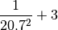
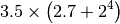
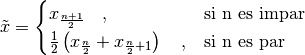
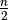
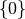
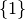
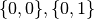
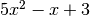
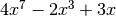

Tipos de datos en Python¶
Como la mayoría de lenguajes de programación, Python maneja varios tipos de datos. Los más importantes son:
Números enteros y flotantes¶
Con los números se pueden realizar los siguientes tipos de operaciones:
Operación Resultado + Suma - Resta * Multiplicación / División // División entera ** Potencia
Advertencia
Al dividir dos números enteros, Python realiza por defecto la división entera de ellos, tal como lo hacen C o C++. Es decir que el resultado de, por ejemplo:
1/2
no es, como uno esperaría, 0.5, sino 0.
Para evitar esto, lo que usualmente se hace es convertir los números a flotantes añadiéndoles un punto al final, de la siguiente forma:
1./2.
Python brinda una alternativa más sencilla para poder olvidarse de si los números con los que estemos trabajando son enteros o flotantes. Para ello debe introducirse la siguiente instrucción en la primera línea del archivo en el que estemos programando:
from __future__ import division
lo que hará que el resultado de todas las divisiones sea el que se esperaría si los números involucrados son flotantes.
- Ejercicios
Realizar las siguientes operaciones
Calcular

Calcular

Cuántos milímetros hay en la distancia de la Tierra a la Luna, que es de 380.000 kilómetros?
Nota
La notación científica en Python se introduce con una e. Por ejemplo: 1e6 = 1000000
Cuántos segundos hay en un siglo?
Cuál es el número más grande que puede calcularse con tres dígitos, los paréntesis y los operadores +, -, *, / y **? (Tomado de Introducción a Mathematica del Prof. Jurgen Tischer). Un ejemplo de este tipo de operación es:
In [94]: (6*6)**7 Out[94]: 78364164096
Nota
Para interrumpir un cálculo en la Terminal de IPython, debe oprimirse el la combinación de teclas Ctrl+C, o elegir la opción “Reinicia el núcleo”, que aparece en la esquina superior derecha de la terminal.
Listas¶
Las listas son arreglos de datos. Se definen con corchetes, y pueden contener datos de distintos tipos (números enteros y flotantes o también los tipos que veremos más abajo). Un ejemplo de una lista en Python es:
In [95]: li = [-5, 7, 4, 9, 1, 12, 2]
La operación más importante que se hace con las listas es la extracción de sus elementos en distintas posiciones. Es muy importante tener en cuenta que las listas en Python siempre empiezan con el índice 0, como los arreglos de C y C++.
In [96]: li[0]
Out[96]: -5
In [97]: li[3]
Out[97]: 9
Lo bueno de las listas en Python es que si usamos un índice más grande que n-1, donde n es el número de elementos, Python nos da un error (en lugar de darnos basura de la memoria, como en C o C++)
In [98]: li[20]
---------------------------------------------------------------------------
IndexError Traceback (most recent call last)
<ipython-input-98-0a252909fc48> in <module>()
----> 1 li[20]
IndexError: list index out of range
Las listas son objetos mutables, es decir, sus elementos pueden modificarse de acuerdo a la siguiente sintaxis:
In [99]: li[1] = 0
In [100]: li
Out[100]: [-5, 0, 4, 9, 1, 12, 2]
El manejo de listas en Python es muy elegante gracias a varias facilidades. En primer lugar pueden usarse índices negativos para extraer elementos del final de la lista hacia adelante, de esta forma:
In [101]: li[-1]
Out[101]: 2
In [102]: li[-3]
Out[102]: 1
Además pueden seleccionarse fácilmente subconjuntos de una lista usando lo que se conoce como rebanado (o slicing en inglés), que consiste en usar dos índices separados por : al momento de tomar elementos de la lista. Al hacerlo, Python toma los elementos que van desde el primer índice hasta uno menos del último. Miremos un par de ejemplos:
In [103]: li[1:3]
Out[103]: [0, 4]
In [104]: li[2:6]
Out[104]: [4, 9, 1, 12]
El rebanado también funciona si se usa un sólo índice, bien sea el superior o el inferior, siempre que vaya acompañado de los :. En estos casos se obtiene el resultado que uno esperaría, es decir, que se tome desde el índice que uno quiera hasta el final:
In [105]: li[2:]
Out[105]: [4, 9, 1, 12, 2]
o lo opuesto: que la selección vaya desde el principio hasta un índice menos que el que se use como último:
In [106]: li[:4]
Out[106]: [-5, 0, 4, 9]
Finalmente cabe decir que se pueden usar las operaciones aritméticas + para concatenar dos listas, y * para repetir varias veces los elementos de una lista, así:
In [107]: [0, 4, 7] + [2, 3]
Out[107]: [0, 4, 7, 2, 3]
In [108]: [0] * 4
Out[108]: [0, 0, 0, 0]
- Ejercicios:
Construir una lista que tenga 100 repeticiones de los números -1, 0 y 1, en ese orden exacto.
Construir una lista que tenga un 1 rodeado de dos listas, cada una con 20 ceros.
Calcular el promedio de la siguiente lista:
li = [3, 18, 17, 44, 14, 12, 29, 19, 4, 6, 17, 7, 14, 6, 8, 17, 17, 21, 65,\ 19, 10, 31, 92, 17, 5, 15, 3, 14, 20, 12, 29, 57, 15, 2, 17, 1, 6, 17, 2,\ 71, 12, 11, 62, 14, 9, 20, 43, 19, 4, 15]
R/:
20.04Nota
Usar el comando sum(li) para obtener la suma de los elementos de la lista, y el comando len(li) para obtener cuantos elementos tiene.
La media móvil es un concepto usado en economía para tratar de observar si existe una tendencia al alza o a la baja en los precios de las acciones de una empresa. Para ello, lo que hace es crear una serie de promedios de distintos subconjuntos del conjunto de datos original.
Por ejemplo, si en siete días las acciones de una empresa tuvieron los siguientes precios:
Precios: 11, 12, 13, 14, 15, 16, 17
Podemos calcular la media móvil, en periodos de cinco días, de la siguiente forma:
Primera media móvil de 5 días: (11 + 12 + 13 + 14 + 15) / 5 = 13
Segunda media móvil de 5 días: (12 + 13 + 14 + 15 + 16) / 5 = 14
Tercera media móvil de 5 días: (13 + 14 + 15 + 16 + 17) / 5 = 15
Con esta descripción, encontrar de la cuarta, séptima y décima medias móviles, en periodos de 10 días, para los siguientes precios de las acciones de Intel registrados entre el 24 de Marzo y el 5 de Mayo de 2010:
intel = [22.27, 22.19, 22.08, 22.17, 22.18, 22.13, 22.23, 22.43, 22.24,\ 22.29, 22.15, 22.39, 22.38, 22.61, 23.36, 24.05, 23.75, 23.83, 23.95,\ 23.63, 23.82, 23.87, 23.65, 23.19, 23.10, 23.33, 22.68, 23.10, 22.40,\ 22.17]
R/:
22.259, 22.613, 23.076
Nota
Utilizar las operaciones de rebanado descritas arriba.
Calcular la mediana de la lista anterior. Recordar que para calcular la mediana hay que organizar los datos de menor a mayor y después utilizar la fórmula:

donde n es el número de elementos de la lista.
R/:
15.0Nota
- Usar el comando sorted(li) para organizar los elementos de la lista de menor a mayor.
- Utilizar división entera en operaciones como , al momento de tomar los elementos correspondientes de li.
Strings o cadenas¶
En Python las cadenas son definidas como listas de caracteres, por lo que es posible aplicarles rebanado y las demás operaciones que vimos en la sección anterior. Una cadena se puede formar usando comillas dobles o sencillas, de la siguiente manera:
In [109]: fruta = "banano"
In [110]: dulce = 'bocadillo'
En este caso, los operadores + y * dan los siguientes resultados:
Operación Uso Resultado + cadena + cadena Une dos cadenas * cadena * número Repite una cadena tantas veces como sea el número
Con las dos variables arriba definidas podemos realizar, por ejemplo, las siguientes operaciones:
In [111]: fruta + dulce
Out[111]: 'bananobocadillo'
In [112]: fruta * 3
Out[112]: 'bananobananobanano'
In [113]: dulce[0]
Out[113]: 'b'
In [114]: dulce[:7]
Out[114]: 'bocadil'
Sin embargo, las cadenas no pueden ser modificadas, es decir, no les puede asignar nuevos elementos como a las listas y por tanto son inmutables. Esto lo podemos constatar a continuación:
In [115]: fruta[2] = 'z'
---------------------------------------------------------------------------
TypeError Traceback (most recent call last)
<ipython-input-115-e128f67047a6> in <module>()
----> 1 fruta[2] = 'z'
TypeError: 'str' object does not support item assignment
Las cadenas tienen varios métodos que pueden ser de gran utilidad. A ellos se puede acceder colocando un punto después del nombre de la variable a la que se le haya asignado una cadena. Por ejemplo, si después de fruta colocamos un punto, veremos que aparece:
In [116]: fruta.
fruta.capitalize fruta.endswith fruta.isalnum fruta.istitle fruta.lstrip fruta.rjust fruta.splitlines fruta.translate
fruta.center fruta.expandtabs fruta.isalpha fruta.isupper fruta.partition fruta.rpartition fruta.startswith fruta.upper
fruta.count fruta.find fruta.isdigit fruta.join fruta.replace fruta.rsplit fruta.strip fruta.zfill
fruta.decode fruta.format fruta.islower fruta.ljust fruta.rfind fruta.rstrip fruta.swapcase
fruta.encode fruta.index fruta.isspace fruta.lower fruta.rindex fruta.split fruta.title
Advertencia
Ninguno de estos métodos modifican a la cadena original, pues como ya dijimos, las cadenas son inmutables.
Entre estos métodos, vamos a mirar que comportamiento tienen los siguientes:
upper: Convierte toda la cadena en mayúsculas
In [117]: fruta.upper() Out[117]: 'BANANO'
count: Cuenta cuantas veces se repite un carácter en una cadena
In [118]: fruta.count('a') Out[118]: 2
replace: Reemplaza un carácter o parte de una cadena por otro carácter o cadena
In [119]: fruta.replace('a', 'o') Out[119]: 'bonono' In [120]: fruta.replace('ban', 'en') Out[120]: 'enano'
split: Divide una cadena según los espacios que tenga y genera una lista de palabras.
In [121]: s = "Hola, mundo!" In [122]: s.split() Out[122]: ['Hola,', 'mundo!']
También puede dividir una cadena por un determinado carácter para partirla en varias subcadenas:
In [123]: dulce.split('d') Out[123]: ['boca', 'illo']
- Ejercicios
Tomar la variable dulce, hacer que se repita 50 veces, y separar las palabras con un espacio, de tal forma que obtengamos algo como lo siguiente, pero sin generar un espacio al final.
'bocadillo bocadillo ...'
Cuántas veces se repite la palabra banano en la siguiente cadena?:
muchas_frutas = 'banAnobanAnobananobanaNobananobananobanaNobaNanobanano\ bananobananobaNanobananobananobaNanobAnanobananobananobanaNobananobanAno\ bananobananobanaNobananobananobananobananobananobananobananobananobAnAno\ bAnanobananobananobananobananobananobanANobananobananobanaNobananobanano\ bananobanaNobAnAnobananobananobananobananobananobAnAnobananobananobanano\ baNanobananobananobaNaNobananobANanobananobananobananobAnanobananobanano\ bananobananobAnanobananobaNAnobananobananobananobaNanobanaNobANanobanano\ baNanobananobananobAnanobananobananobananobaNAnobananobanANobananobAnano\ bANanobanAnobananobaNanobananobananobananobananobananobananobAnanobanano\ bananobanAnobananobananobanAnobananobananobananobanAnobananobananobaNano\ bAnanobananobAnanobaNanobananobanaNobananobananobanANobananobananobANAno\ bananobananobaNAnobanaNobAnanobanAnobananobananobanAnobaNanobananobanaNo\ banaNobANAnobananobananobanAnobananobananobanANobananobanAnobananobanano\ banaNobananobAnanobananobAnanobananobanANobananobananobanAnobanaNobanano\ bananobAnanobananobaNanobananobanANobananobananobananobaNAnobananobanAno\ bananobananobananobaNanobananobananobanAnobananobananobANanobananobanano\ bananobananobaNanobananobananobananobAnanobananobananobananobananobanano\ bananobanANobananobanaNobAnanobananobaNanobaNAnobananobananobananobanano\ bananobananobananobananobananobAnanobanaNobananobananobaNAnobananobanANo\ bananobanaNobananobananobananobananobananobaNanobananobanaNobanAnobanAno\ bananobanAno'
R/:
150Cuántas veces se repite banano en la cadena anterior, sin importar si algunas de sus letras están en mayúsculas o no?
R/:
239¿Qué produce el método center?
Experimentar con los siguientes comandos para ver que produce:
In [124]: dulce.center(2) In [125]: dulce.center(10) In [126]: dulce.center(16) In [127]: dulce.center(30)
Tuplas¶
Una tupla es un arreglo inmutable de distintos tipos de datos. Es decir, es como si fuera una lista y tiene sus mismas propiedades, pero al igual que las cadenas, no es posible modificar ninguno de sus valores.
Las tuplas se definen con paréntesis ( ) en lugar de corchetes. Un ejemplo de tupla sería:
In [128]: tp = (1, 2, 3, 4, 'a')
In [129]: tp[3]
Out[129]: 4
In [130]: tp[-1]
Out[130]: 'a'
In [131]: tp[2:]
Out[131]: (3, 4, 'a')
Pero no podemos modificar sus valores mediante nuevas asignaciones:
In [132]: tp[2] = 'b'
---------------------------------------------------------------------------
TypeError Traceback (most recent call last)
<ipython-input-132-3688dc6b8d2c> in <module>()
----> 1 tp[2] = 'b'
TypeError: 'tuple' object does not support item assignment
Nota
Es posible omitir los paréntesis al momento de definir una tupla si así se desea, lo cual es una práctica bastante extendida entre los programadores de Python. Por ejemplo, una asignación válida es:
In [133]: tp1 = 'a', 'b', 2
In [134]: tp1
Out[134]: ('a', 'b', 2)
- Ejercicios
¿Es posible calcularle el promedio a la lista de este ejercicio si está definida como una tupla?
Crear una tupla que tenga un sólo elemento
¿Qué efecto tiene esta operación:
x, y, z = tp1
dado el valor de tp1 definido arriba?
¿Por qué, en cambio, esta operación falla?:
u, v = tp1
¿Cómo se calcula el máximo de una tupla?
Diccionarios¶
Los diccionarios son una estructura de datos muy usada en Python. Ya hemos visto que los elementos de listas, cadenas y tuplas están indexados por números, es decir, li[0], fruta[1] o tp[2]. En su lugar, los diccionarios están indexados por claves (o keys en inglés), que pueden ser no sólo números, sino también cadenas, tuplas o cualquier otro tipo de datos que sea inmutable.
Lo interesante de los diccionarios es que nos sirven para relacionar dos tipos distintos de datos: las claves con sus valores (o values en inglés), que pueden ser mutables o inmutables.
Por ejemplo, supongamos que queremos guardar los códigos que varias personas están utilizando para entrar a un servicio web. Esto lo podemos hacer muy fácilmente con un diccionario, en el que las claves sean el nombre de cada persona y sus valores sean las contraseñas que estén usando.
Para ello, en Python podemos escribir algo como:
In [135]: codigos = {'Luis': 2257, 'Juan': 9739, 'Carlos': 5591}
Como podemos ver, los diccionarios se definen con llaves ({ }). Las claves son los elementos que están a la izquierda de los :, mientras que los que están a la derecha son los valores.
Como ya se mencionó, para extraer un elemento de un diccionario es necesario usar alguna de sus claves. En nuestro caso, las claves son los nombres de las personas. Por ejemplo, para extraer el código que le corresponde a Carlos debemos escribir:
In [136]: codigos['Carlos']
Out[136]: 5591
o para el de Juan
In [137]: codigos['Juan']
Out[137]: 9739
Si alguien cambia de contraseña, podemos actualizar nuestro diccionario fácilmente haciendo una nueva asignación, por ejemplo:
In [138]: codigos['Luis'] = 1627
In [139]: codigos
Out[139]: {'Carlos': 5591, 'Juan': 9739, 'Luis': 1627}
Nota
Los diccionarios no tienen un orden interno por defecto. En el último ejemplo podemos ver como 'Luis' aparece al final del diccionario, mientras que en la primera definición de códigos aparecía al principio. No hay que preocuparse por ello.
O si una persona se retira del servicio, podemos eliminarla del diccionario usando el comando del, así
In [140]: del codigos['Juan']
In [141]: codigos
Out[141]: {'Carlos': 5591, 'Luis': 1627}
Si queremos introducir el nombre y la contraseña de una nueva persona, sólo es necesario usar una nueva clave y asignarle un valor, así
In [142]: codigos['Jorge'] = 6621
In [143]: codigos
Out[143]: {'Carlos': 5591, 'Jorge': 6621, 'Luis': 1627}
Para saber si una persona ya está en el diccionario o no, usamos el siguiente método:
In [144]: codigos.has_key('Carlos')
Out[144]: True
In [145]: codigos.has_key('José')
Out[145]: False
Finalmente, para extraer todas las claves y los valores de un diccionario podemos usar los siguientes métodos:
In [146]: codigos.keys()
Out[146]: ['Luis', 'Jorge', 'Carlos']
In [147]: codigos.values()
Out[147]: [1627, 6621, 5591]
- Ejercicios
Definir un diccionario que represente una función que sólo puede tomar los valores del producto cartesiano de los conjuntos  con  (i.e. , etc), y que retorna el segundo valor de cada tupla.
Una forma eficiente de definir y evaluar polinomios, es a través de un diccionario. En éste las claves corresponden a las potencias del polinomio y sus valores al coeficiente de la potencia correspondiente.
Por ejemplo, el polinomio  corresponde al diccionario:
{0: 3, 1: -1, 2: 5}
Definir un diccionario para el polinomio  y obtener cuál es su valor cuando
 (Tomado de A Primer on
Scientific Programming with Python, de Hans Petter Langtangen)
(Tomado de A Primer on
Scientific Programming with Python, de Hans Petter Langtangen)R./:
502
Conversión entre tipos de datos¶
Para convertir entre unos y otros tipos de datos, en Python se usan los siguientes comandos:
int: Da la parte entera de un número flotante, y también covierte cadenas que sean enteros.
In [148]: int(3.99) Out[148]: 3 In [149]: int('6') Out[149]: 6
float: Convierte enteros y cadenas a números flotantes.
In [150]: float(12) Out[150]: 12.0 In [151]: float('4.23') Out[151]: 4.23
str: Convierte números y cualquier otro objeto a una cadena.
In [152]: str(36.1) Out[152]: '36.1' In [153]: str([1,2,3]) Out[153]: '[1, 2, 3]'
list: Convierte tuplas, diccionarios y cadenas a una lista.
In [154]: list((3, 2, 4)) Out[154]: [3, 2, 4] In [155]: list('1457') Out[155]: ['1', '4', '5', '7']
Para los diccionarios, list sólo extrae las claves y no los valores
In [156]: list({'a': 12, 'b': 5}) Out[156]: ['a', 'b']
dict: Convierte una lista de listas, donde cada una tiene dos elementos, a un diccionario.
In [157]: dict([[10, 'a'], [15, 't']]) Out[157]: {10: 'a', 15: 't'}